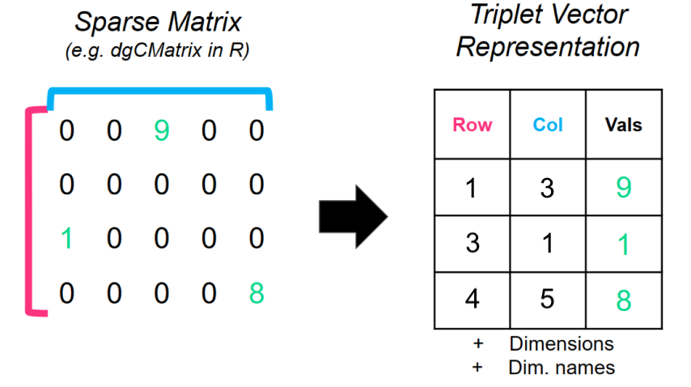

dbMatrix
dbMatrix is a core package in the dbverse
library that inherits from the dbData base class and
consists of two subclasses, dbSparseMatrix and
dbDenseMatrix.
dbMatrix objects emulate in-memory dense and sparse
matrices in an embedded database powered by DuckDB.
dbSparseMatrix

Sparse matrices are represented as triplet vectors with
i, j, and x numerical vectors.
i and j refer to the row and column indices,
respectively, with specific x values or counts. Note: The
i and j vectors are one-based following
conventions from the Matrix R package and the
TSparseMatrix class.
The dbSparseMatrix class stores the triplet vector
representation with its associated dimension names and dimensions if
available. If none are provided, they are automatically generated as
factors (enums) with row# or col# labels for
rownames and colnames, respectively. The dbSparseMatrix
class does not contain zeros in the triplet vector representation. Zero
values are inferred based on the provided dimensions.
Support for compressed sparse column matrices of the
dgCMatrix class from the Matrix R package is
currently implemented. For more information about sparse matrices, see
the wiki article
here.